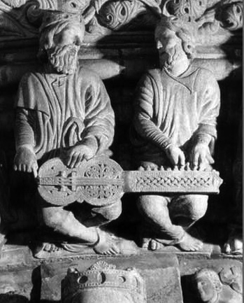

During the Gothic period a large hurdy-gurdy (organistrum) was used in many cloisters and monastic schools to teach music, perform religious polyphony and provide correct intonation for singers. Generally considered the ancestor of all subsequent hurdy-gurdies, the organistrum differs substantially from later instruments in that it was played by two individuals: one turned the crank while the other pulled the keys upward to change the musical pitch of the melody strings. [Jackson 2005]

Organistrum players in Santiago de Compostela, Spain
Jackson, R. (2013). Hurdy-gurdy. Performance practice: a dictionary-guide for musicians(pp.193-194). Routledge.